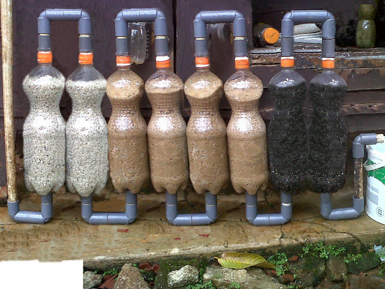
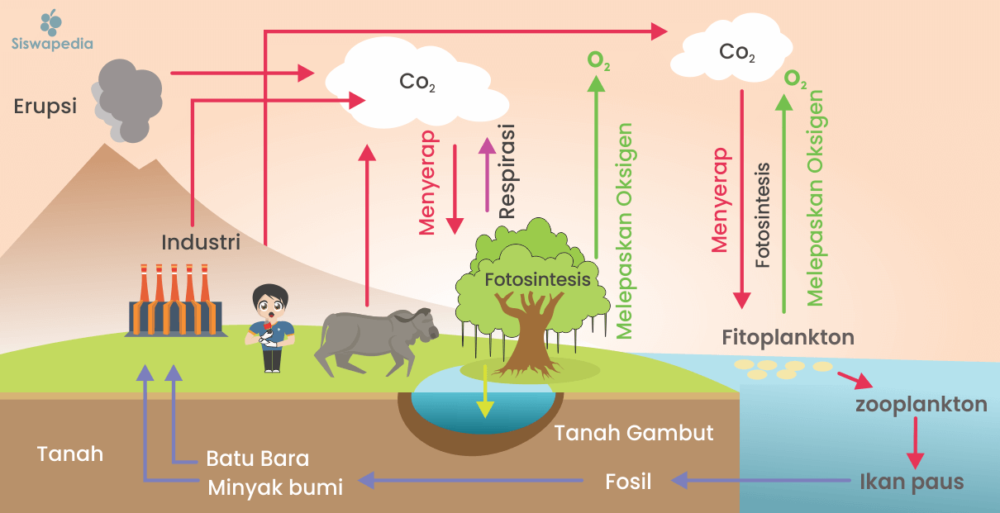
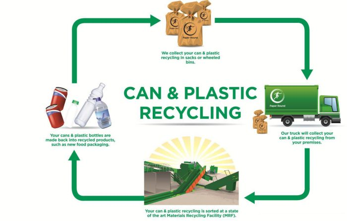
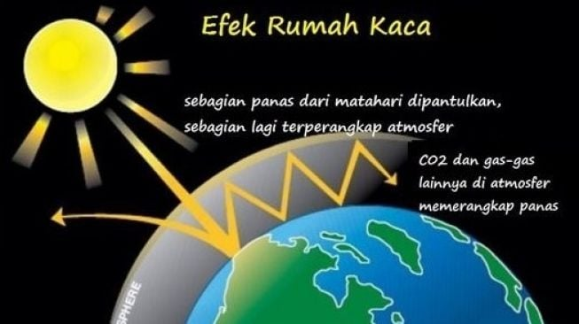
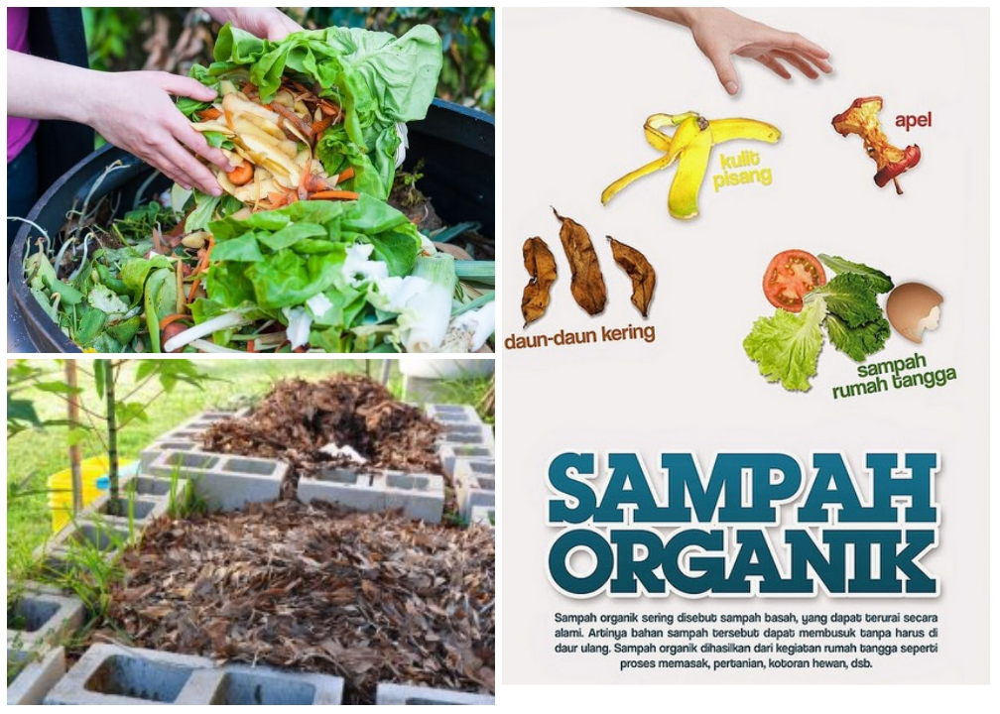
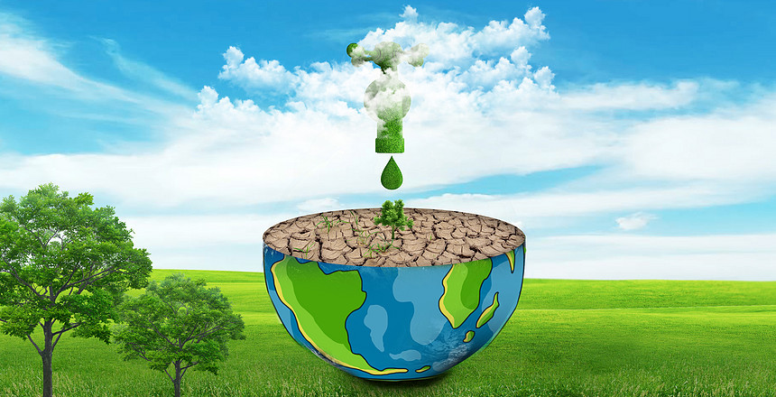

Pelajari sains di balik teknologi hijau dan kelestarian lingkungan
Teknologi Biofilter untuk Air Bersih

Biofilter adalah sistem pengolahan air yang memanfaatkan mikroorganisme untuk menguraikan polutan organik. Teknologi ini ramah lingkungan dan efisien dalam membersihkan air limbah domestik.
Cara Kerja Biofilter:
Media Filter: Menggunakan batu apung, kerikil, atau bahan organik sebagai tempat tumbuh bakteri pengurai
Proses Aerobik: Bakteri memerlukan oksigen untuk menguraikan limbah organik menjadi zat yang lebih sederhana
Hasil Akhir: Air yang keluar sudah lebih bersih dan aman untuk dibuang ke lingkungan
Manfaat: Mengurangi pencemaran air, biaya operasional rendah, dan ramah lingkungan.
Siklus Karbon dan Pemanasan Global

Siklus karbon adalah proses alami perpindahan karbon antara atmosfer, tanah, air, dan makhluk hidup. Gangguan pada siklus ini menyebabkan pemanasan global.
Tahapan Siklus Karbon:
Fotosintesis: Tumbuhan menyerap CO₂ dari atmosfer dan mengubahnya menjadi oksigen dan glukosa
Respirasi: Makhluk hidup mengeluarkan CO₂ kembali ke atmosfer saat bernapas
Dekomposisi: Organisme pengurai melepaskan karbon dari bahan organik yang mati
Pembakaran Fosil: Aktivitas manusia melepaskan karbon tersimpan dalam bahan bakar fosil
Dampak: Peningkatan CO₂ di atmosfer menyebabkan efek rumah kaca dan pemanasan global.
Daur Hidup Plastik dan Dampaknya

Plastik membutuhkan ratusan tahun untuk terurai. Memahami daur hidup plastik membantu kita membuat keputusan yang lebih bijak dalam penggunaannya.
Tahapan Daur Hidup Plastik:
Produksi: Dibuat dari minyak bumi melalui proses kimia yang menghasilkan emisi CO₂
Penggunaan: Digunakan dalam berbagai produk, seringkali hanya sekali pakai
Pembuangan: Berakhir di TPA, lautan, atau insinerator
Degradasi: Membutuhkan 100-1000 tahun untuk terurai, melepaskan mikroplastik berbahaya
Solusi: Kurangi penggunaan plastik sekali pakai, gunakan alternatif ramah lingkungan, dan daur ulang dengan benar.
Efek Rumah Kaca: Penyebab dan Solusi

Efek rumah kaca adalah fenomena alami yang menjaga suhu bumi tetap hangat. Namun, aktivitas manusia meningkatkan efek ini hingga berbahaya.
Cara Kerja Efek Rumah Kaca:
Radiasi Matahari: Energi matahari masuk ke atmosfer bumi
Penyerapan Panas: Permukaan bumi menyerap sebagian energi dan memantulkan sisanya
Gas Rumah Kaca: CO₂, metana, dan gas lain menahan panas yang dipantulkan
Pemanasan: Panas terperangkap menyebabkan suhu bumi meningkat
Solusi: Kurangi emisi dengan energi terbarukan, hemat energi, dan tanam lebih banyak pohon.
Kompos: Mengubah Sampah Jadi Harta

Kompos adalah proses alami mengubah sampah organik menjadi pupuk kaya nutrisi. Ini adalah cara sederhana mengurangi sampah dan menyuburkan tanah.
Proses Pembuatan Kompos:
Bahan Hijau: Sisa sayuran, buah, dan rumput (kaya nitrogen)
Bahan Coklat: Daun kering, ranting, kertas (kaya karbon)
Dekomposisi: Mikroorganisme mengurai bahan organik dalam 2-3 bulan
Hasil: Kompos matang berwarna coklat gelap, berbau tanah, dan siap digunakan
Manfaat: Mengurangi sampah TPA, menyuburkan tanah tanpa kimia, dan mengurangi emisi metana.
Konservasi Air: Setiap Tetes Berharga

Air bersih adalah sumber daya terbatas. Konservasi air dimulai dari kebiasaan sederhana di rumah dan sekolah.
Tips Konservasi Air:
Perbaiki Kebocoran: Keran bocor bisa membuang 20 liter air per hari
Mandi Singkat: Kurangi waktu mandi dari 15 menit jadi 5 menit
Gunakan Kembali: Air bekas cuci sayur bisa untuk menyiram tanaman
Tampung Air Hujan: Gunakan untuk menyiram tanaman atau mencuci kendaraan
Fakta: Menghemat 10 liter air per hari = 3.650 liter per tahun per orang!